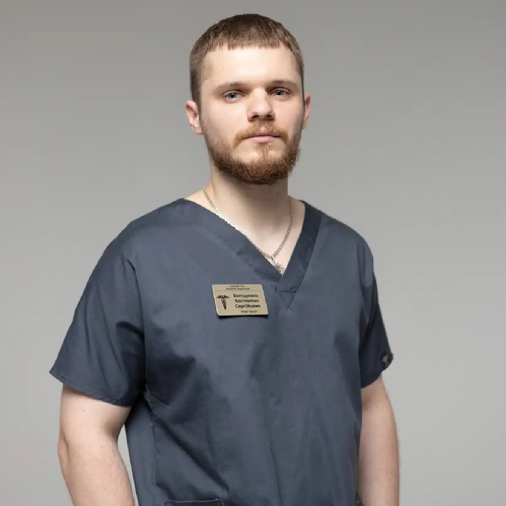

+38(068) 79 72 782
+38(068) 79 72 782Подшивки от наркотиков в Запорожье
Контроль тяги — уверенность в завтрашнем дне


Бесплатная консультация, работаем круглосуточно 24/7
Контроль тяги — уверенность в завтрашнем дне

Подшивка от наркотиков — это один из методов противорецидивной терапии, который применяется в составе комплексного лечения зависимости. В Запорожье данная процедура используется как дополнительный инструмент для закрепления отказа от употребления и снижения риска срыва. Она особенно актуальна на этапах, когда пациент уже прошёл детоксикацию и начал восстановление, но ещё сохраняется выраженная тяга к веществам.
Подшивка не является самостоятельным лечением и не устраняет причины зависимости. Наиболее эффективно она работает в сочетании с детоксикацией, медикаментозной поддержкой, психотерапией и последующей реабилитацией. Только комплексный подход позволяет воздействовать не только на физическую, но и на психологическую составляющую зависимости, что значительно повышает шансы на устойчивый результат. Процедура помогает сформировать устойчивое отрицательное отношение к наркотикам на физиологическом уровне и создаёт дополнительный барьер, который удерживает пациента от повторного употребления. В зависимости от используемого препарата, подшивка может блокировать эффект наркотика или вызывать неприятные реакции при его приёме, что постепенно снижает желание возвращаться к употреблению.
Особенно важна роль подшивки в период раннего восстановления, когда риск срыва остаётся наиболее высоким. В это время человек сталкивается с психологическими трудностями, стрессами и привычными триггерами. Наличие дополнительной защиты в виде подшивки помогает пациенту чувствовать себя более уверенно и сосредоточиться на работе с психологом и изменении образа жизни. Подшивка становится важной частью комплексной терапии, усиливая её эффективность и помогая закрепить достигнутые результаты. Она даёт пациенту дополнительное время и ресурс для формирования устойчивой трезвости и постепенного возвращения к полноценной жизни без наркотической зависимости.
Подшивка от наркотиков — это введение в организм специального препарата (чаще всего в виде импланта, капсулы или инъекции пролонгированного действия), который сохраняет терапевтический эффект на протяжении определённого времени и влияет на реакцию организма при попытке употребления психоактивных веществ. Такой метод позволяет обеспечить длительную защиту без необходимости ежедневного приёма лекарств, что особенно важно для пациентов на этапе восстановления.
Основная цель процедуры — создать дополнительный барьер, который помогает пациенту удерживаться от употребления и снижает вероятность срыва. Подшивка действует на физиологическом уровне, дополняя психологическую работу и усиливая мотивацию к трезвости. В зависимости от выбранного препарата, эффект может заключаться либо в блокировании действия наркотика (человек не испытывает ожидаемого эффекта), либо в формировании негативной реакции на его приём, что делает употребление нежелательным.
Процедура проводится под контролем нарколога после предварительной подготовки, включающей отказ от наркотиков и, при необходимости, детоксикацию. Это важно для безопасности пациента и правильной работы препарата. Перед подшивкой врач оценивает состояние здоровья, выявляет возможные противопоказания и подбирает оптимальный вариант лечения. Подшивка не вызывает эйфории или изменения сознания, а её действие направлено исключительно на снижение тяги и предотвращение возврата к употреблению. Она помогает пациенту сосредоточиться на восстановлении, прохождении психотерапии и формировании новых привычек, что в комплексе значительно повышает эффективность лечения зависимости.
Механизм действия подшивки зависит от выбранного препарата, типа зависимости и индивидуальных особенностей организма пациента. Некоторые средства работают по принципу блокировки рецепторов, отвечающих за получение удовольствия от наркотика. В результате даже при попытке употребления человек не испытывает привычного эффекта — отсутствует эйфория, расслабление или стимуляция, ради которых ранее происходило употребление. Со временем это приводит к снижению интереса к веществу и постепенному разрушению сформированной зависимости на уровне привычки и ожидания «награждения».
Другие препараты действуют по иному механизму — они формируют выраженную негативную реакцию организма при попадании наркотика. Это может проявляться ухудшением самочувствия, слабостью, тревожностью, тошнотой, головокружением и другими неприятными ощущениями. Даже однократный негативный опыт после подшивки способен закрепиться на уровне психики и сформировать стойкий условный рефлекс отвращения к веществу. В дальнейшем сама мысль об употреблении начинает вызывать внутреннее сопротивление. Действие подшивки носит не только физиологический, но и выраженный психологический характер. Осознание того, что в организме находится препарат, который блокирует эффект или вызывает негативную реакцию, усиливает самоконтроль и снижает импульсивность. Пациент чувствует дополнительную «защиту», которая помогает ему удерживаться в сложные моменты — при стрессе, эмоциональных перегрузках или контакте с триггерами.
Кроме того, подшивка создаёт так называемое «терапевтическое окно» — период времени, в течение которого человек может сосредоточиться на восстановлении без постоянной борьбы с тягой. Это особенно важно в первые месяцы после отказа, когда риск рецидива остаётся максимально высоким. Подшивка снижает психологическую тягу, уменьшает вероятность импульсивного употребления и служит дополнительной защитой в период восстановления. Она даёт пациенту время и ресурс для прохождения психотерапии, формирования новых привычек, изменения образа жизни и постепенного возвращения к полноценной жизни без наркотической зависимости.
Для подшивки от наркотической зависимости могут использоваться различные препараты, выбор которых зависит от типа зависимости, стажа употребления, общего состояния здоровья пациента, возраста и наличия сопутствующих заболеваний. Важно учитывать не только вид употребляемого вещества, но и психоэмоциональное состояние человека, уровень мотивации к лечению и риск рецидива. Подбор медикамента всегда осуществляется индивидуально наркологом после комплексного обследования, так как от этого напрямую зависит эффективность и безопасность процедуры. Наиболее часто применяются следующие препараты:
В ряде случаев могут применяться и другие препараты или комбинированные схемы лечения, особенно при сложных формах зависимости. Решение о выборе медикамента принимается только после оценки состояния пациента, так как неправильный подбор может снизить эффективность терапии или вызвать нежелательные реакции. Перед проведением подшивки пациент должен полностью отказаться от употребления наркотиков и пройти этап детоксикации. Это необходимо для безопасного введения препарата и правильного формирования его действия. Несоблюдение этого условия может привести к осложнениям и ухудшению состояния. Индивидуальный подход к выбору препарата, строгий медицинский контроль и сочетание подшивки с психотерапией и реабилитацией позволяют значительно повысить эффективность лечения. Такой комплексный подход помогает не только снизить тягу к наркотикам, но и сформировать устойчивую мотивацию к трезвой жизни и предотвратить рецидив.
Эффективность подшивки во многом зависит от мотивации пациента и комплексного подхода к лечению. Сам по себе метод не устраняет глубинные причины зависимости, такие как психологические проблемы, стрессовые факторы или сформированные поведенческие привычки. Однако подшивка создаёт важный защитный механизм, который помогает удержаться от употребления в наиболее уязвимый период и значительно снижает риск срыва. Особую роль играет осознанное желание пациента изменить свою жизнь. Если человек мотивирован на отказ от наркотиков и готов работать над собой, подшивка становится мощным инструментом поддержки. Она помогает снизить внутреннюю борьбу с тягой и даёт возможность сосредоточиться на восстановлении.
Наилучшие результаты достигаются при сочетании подшивки с психотерапией и реабилитацией. В этом случае происходит не только блокировка или негативное подкрепление на физиологическом уровне, но и глубокая проработка причин зависимости. Психотерапия помогает изменить мышление, сформировать новые модели поведения и научиться справляться со стрессом без употребления. Реабилитация закрепляет достигнутый результат, способствует формированию устойчивых привычек трезвой жизни и восстановлению социальной активности. В этот период пациент получает поддержку специалистов, учится избегать триггеров и вырабатывает навыки предотвращения срывов. Подшивка является эффективной частью комплексного лечения, но её максимальная польза раскрывается именно в сочетании с другими методами терапии. Такой подход значительно повышает вероятность длительной ремиссии и помогает пациенту вернуться к полноценной жизни без зависимости.
Стоимость подшивки в Запорожье начинается от 15000 грн.
| Популярные услуги | Цена |
|---|---|
| Консультация нарколога | От 1500 грн |
| Лечение наркомании | От 2499 грн |
| Капельница от наркотиков | От 2499 грн |
| Вывод из запоя на дому | От 2199 грн |
Срок действия подшивки зависит от выбранного препарата, его формы (инъекция, имплант) и индивидуальных особенностей организма пациента. В среднем он может составлять от одного месяца до одного года. Пролонгированные формы препаратов обеспечивают стабильный и длительный эффект, что позволяет пациенту не задумываться о ежедневном приёме лекарств и сосредоточиться на восстановлении.
Длительное действие подшивки особенно важно на этапе ранней ремиссии, когда риск срыва остаётся наиболее высоким. Наличие постоянной защиты в течение нескольких месяцев помогает снизить импульсивное желание употребить и даёт время для формирования новых привычек и устойчивых поведенческих моделей. Конкретный срок действия определяется наркологом с учётом состояния пациента, стажа зависимости, вида употребляемых веществ и выбранной схемы лечения. Врач также учитывает уровень мотивации и риск рецидива, чтобы подобрать оптимальную продолжительность действия препарата.
По мере завершения срока действия подшивки пациенту может быть рекомендовано повторное проведение процедуры или переход на другие методы поддерживающей терапии. Регулярное наблюдение у нарколога позволяет своевременно оценить состояние и принять решение о дальнейшем лечении. Правильно подобранный срок действия подшивки играет важную роль в эффективности терапии, обеспечивая стабильную поддержку в период восстановления и снижая вероятность возврата к наркотической зависимости.
При употреблении наркотиков после подшивки возможны различные реакции организма, которые напрямую зависят от механизма действия введённого препарата. Именно эти реакции и формируют дополнительный защитный барьер, препятствующий возврату к употреблению. В случае применения блокирующих препаратов пациент не испытывает ожидаемого эффекта от наркотика. Отсутствует чувство эйфории, расслабления или стимуляции, ради которых ранее происходило употребление. Это постепенно снижает интерес к веществу, так как исчезает главный «стимул» зависимости — получение удовольствия. Со временем у человека формируется понимание бессмысленности употребления, что способствует отказу от него.
При использовании препаратов с антагонистическим или аверсивным действием могут возникать неприятные ощущения при попытке употребления. Это может проявляться ухудшением общего самочувствия, слабостью, тревожностью, головокружением, тошнотой и другими дискомфортными симптомами. Такие реакции не представляют цели причинить вред, но служат сигналом организму о негативных последствиях употребления. В результате формируется устойчивое отрицательное отношение к наркотикам на уровне как физиологии, так и психики. Даже единичный негативный опыт после подшивки способен значительно снизить желание возвращаться к употреблению.
Важно понимать, что выраженность реакции может быть разной и зависит от индивидуальных особенностей организма, типа препарата и дозировки. Именно поэтому подшивка проводится только под контролем нарколога с предварительной оценкой состояния пациента. Реакции после употребления наркотиков на фоне подшивки выполняют защитную функцию, помогая пациенту удержаться от срыва и закрепить результат лечения.
Перед проведением подшивки необходимо полностью отказаться от употребления наркотиков на определённый срок. Обычно этот период составляет от 5 до 10 дней, однако точные сроки определяются наркологом индивидуально — в зависимости от вида употребляемого вещества, длительности зависимости, общего состояния организма и скорости выведения наркотика. Этот этап крайне важен, так как наличие психоактивных веществ в организме может повлиять на действие препарата и повысить риск нежелательных реакций. Особенно это касается препаратов с блокирующим или антагонистическим действием, которые при взаимодействии с остатками наркотиков могут вызывать резкое ухудшение самочувствия.
Проведение процедуры на фоне наличия наркотиков в организме может быть опасным, поэтому предварительная детоксикация является обязательной. В процессе детоксикации организм очищается от токсинов, стабилизируется работа внутренних органов и снижается выраженность абстинентного синдрома. Это создаёт безопасные условия для проведения подшивки и обеспечивает её максимальную эффективность. Перед процедурой нарколог обязательно проводит оценку состояния пациента, при необходимости назначает анализы и контролирует процесс подготовки. Только после подтверждения того, что организм очищен от наркотических веществ, можно проводить подшивку. Соблюдение периода воздержания и прохождение детоксикации — это важные условия, которые обеспечивают безопасность процедуры, правильное действие препарата и повышают шансы на успешное лечение зависимости.
Подшивка считается безопасной процедурой при условии её проведения под контролем нарколога и соблюдения всех медицинских рекомендаций. Используемые препараты проходят клиническую проверку и применяются в наркологической практике, однако безопасность напрямую зависит от правильного подбора метода и состояния пациента на момент проведения процедуры.
Несмотря на это, существуют противопоказания, которые обязательно учитываются перед подшивкой. К ним относятся тяжёлые заболевания внутренних органов (сердечно-сосудистой системы, печени, почек), выраженные психические расстройства, а также индивидуальная непереносимость или аллергические реакции на компоненты препаратов. В некоторых случаях процедура может быть временно отложена до стабилизации состояния пациента. Перед проведением подшивки обязательно проводится комплексное обследование. Нарколог оценивает общее состояние здоровья, собирает анамнез, уточняет стаж и особенности употребления, а при необходимости назначает дополнительные анализы. Это позволяет исключить возможные риски и подобрать наиболее безопасный и эффективный препарат.
Также важно, чтобы пациент находился в трезвом состоянии и прошёл этап детоксикации. Это снижает вероятность осложнений и обеспечивает корректное действие подшивки. Врач обязательно информирует пациента о механизме действия препарата, возможных реакциях и правилах поведения после процедуры. Подшивка является безопасным и эффективным методом, который может стать важной частью комплексного лечения наркотической зависимости.
Повторная подшивка может потребоваться после окончания действия препарата или при высоком риске срыва. С течением времени защитный эффект постепенно ослабевает, поэтому важно своевременно оценивать состояние пациента и при необходимости продлевать действие терапии. Решение о повторной процедуре принимает нарколог на основании общего состояния, уровня мотивации, наличия тяги к веществам и динамики восстановления. Особое внимание уделяется периоду, когда заканчивается действие подшивки, так как именно в это время риск рецидива может возрастать. Если пациент ещё не сформировал устойчивые поведенческие навыки и остаётся уязвимым к триггерам, повторная подшивка может стать эффективной мерой профилактики срыва.
Регулярное наблюдение у нарколога позволяет своевременно корректировать терапию, отслеживать изменения в состоянии пациента и при необходимости вносить изменения в план лечения. Врач может рекомендовать не только повторную подшивку, но и усиление психотерапевтической поддержки или продолжение реабилитации. Повторная подшивка рассматривается как часть долгосрочной стратегии лечения, направленной на поддержание устойчивого результата. Комплексный подход и постоянный медицинский контроль помогают минимизировать риск рецидива и обеспечить стабильную трезвость на протяжении длительного времени.
Наркологическая клиника UmbrellaPlus предлагает пройти процедуру подшивки от наркотиков в Запорожье анонимно, безопасно и под контролем опытного нарколога. Специалисты центра подбирают оптимальный препарат и схему лечения с учётом индивидуальных особенностей пациента.
Клиника обеспечивает полный комплекс услуг — от диагностики и детоксикации до психологической поддержки и реабилитации. Такой подход позволяет добиться максимальной эффективности и снизить риск рецидива. Обращение в UmbrellaPlus — это возможность сделать важный шаг к жизни без наркотической зависимости и получить профессиональную помощь на всех этапах восстановления.
Телефон для консультации: +38(050-021-69-57)

Да, мы строго соблюдаем полную конфиденциальность на всех этапах лечения. Информация о пациенте, диагнозе и прохождении терапии не передаётся третьим лицам. Обращение к нам не влечёт постановку на учёт. Вы можете быть уверены в безопасности и анонимности.
Программа лечения разрабатывается индивидуально после консультации со специалистом. Учитываются вид зависимости, её длительность, физическое и психологическое состояние пациента. Такой подход позволяет повысить эффективность терапии и снизить риск срыва. Мы не используем шаблонные решения.
Да, мы сопровождаем пациентов и после основного курса лечения. Проводятся консультации, рекомендации по адаптации и профилактике рецидивов. При необходимости возможна дальнейшая психологическая поддержка. Это помогает сохранить результат и вернуться к полноценной жизни.
Анонимно

Помогли при наркотической зависимости
Номер телефона:
+380 (68) 797 27 82
+380 (50) 021 69 57
Адрес наркологического центра вашего города уточняйте по
телефону
Работаем в: Киеве, Одессе, Львове, Харькове, Днепре,
Запорожье, Черкассах, Чугуеве, Черноморске, Каменском
Telegram: t.me/umbrellaplus
График работы: Круглосуточно